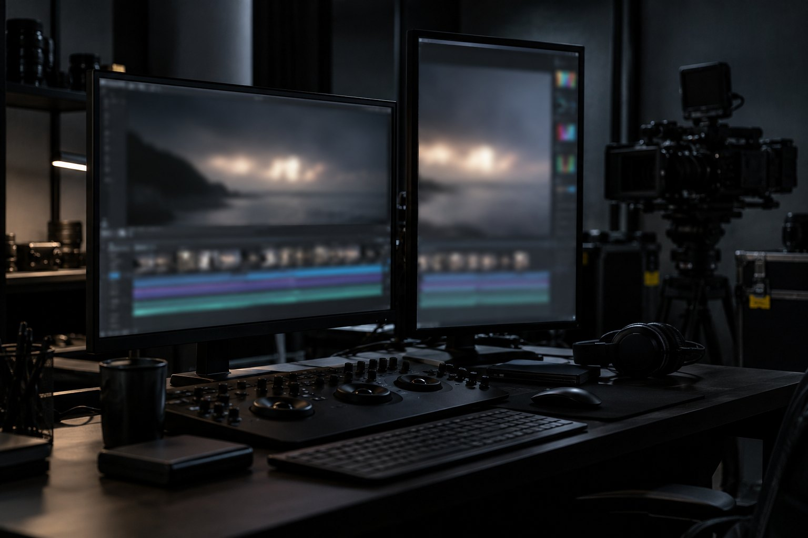

E1 · Dois formatos do exemplo
10 minRode o bloco "marca, check, dois renders e conferir".
Pronto quando: OK: 15,0 s · 1920×1080 · 30 fps · sem áudio e OK: 15,0 s · 1080×1920 · 30 fps · sem áudio, cada um com saída: 0.
Aula 8 · 20 min
Hora de juntar tudo numa peça que você usa: uma abertura de 15 s com o seu DESIGN.md, nos dois formatos que as redes pedem. O 9:16 não sai do 16:9 por uma opção de render: é outra composição que reaproveita o CSS e a coreografia. Nesta aula você entrega as duas, conferidas pelo kit, e monta o plano com datas.
Começar a aula
Objetivo: entregar uma abertura de 15 s em 16:9 e 9:16, com o DESIGN.md, conferida pelo kit nos dois formatos.
As quatro entregas que a abertura junta. Clique num degrau para ver o "pronto quando".
init e render
3 exercícios
Projeto HyperFrames que renderiza e passa no conferidor.
Ver a aulaRISE e quadros
3 exercícios
Composição que o agente fez e você conferiu em cinco quadros.
Ver a aulaO projeto da aula 2, com a versão fixa e a telemetria desligada. É a pasta onde a abertura vai morar.
O DESIGN.md da aula 4 manda nas cores e no movimento dos dois formatos.
O pedido RISE da aula 3, agora para 15 s e dois formatos. O E inclui o check e os quadros dos dois.
Se a sua abertura tem voz ou trilha, a aula 7 põe o som. Se não tem, pule: o conferidor diz "sem áudio" e está certo.
Aulas 1, 5 e 6 são base: determinismo, Remotion e bibliotecas entram quando a sua peça pedir.
abertura.css e abertura.js são compartilhados; index.html (1920×1080) e formatos/vertical.html (1080×1920) só mudam a raiz e uma classe.
/* tokens do DESIGN.md + layout que serve aos dois formatos (16:9 e 9:16) */
:root { --fundo: #0c0c10; --superficie: #1c1c22; --linha: #3f3f47; --texto: #f4f4f5; --texto2: #a1a1aa; --destaque: #e9b949; }
* { margin: 0; padding: 0; box-sizing: border-box; }
html, body { overflow: hidden; background: var(--fundo); }
#root { width: 100%; height: 100%; position: relative; font-family: ui-sans-serif, system-ui, sans-serif; }
#luz { position: absolute; inset: 0; background: radial-gradient(ellipse at 50% 45%, var(--superficie) 0%, var(--fundo) 70%); }
#bloco { position: absolute; left: 10%; right: 10%; top: 50%; transform: translateY(-50%); }
#rotulo { color: var(--texto2); font-size: 40px; letter-spacing: 0.2em; text-transform: uppercase; line-height: 1.3; }
#titulo { color: var(--texto); font-size: 150px; font-weight: 700; line-height: 1.1; margin-top: 36px; }
#apoio { color: var(--texto2); font-size: 54px; line-height: 1.2; margin-top: 40px; }
#trilho { position: absolute; left: 10%; right: 10%; bottom: 14%; height: 4px; background: var(--linha); transform-origin: left center; }
#cabeca { position: absolute; left: 10%; bottom: calc(14% - 38px); width: 18px; height: 80px; background: var(--destaque); border-radius: 4px; }
/* 9:16: mesma peça, letra maior em relação à largura, tudo empilhado */
.vertical #titulo { font-size: 132px; }
.vertical #apoio { font-size: 56px; }
.vertical #rotulo { font-size: 36px; }// A mesma coreografia nos dois formatos: só a distância da cabeça de leitura depende da largura.
window.criaAbertura = function () {
const root = document.getElementById("root");
const largura = Number(root.dataset.width);
const corrida = largura * 0.8 - 18; // do começo ao fim do trilho (80% da largura)
const tl = gsap.timeline({ paused: true });
tl.fromTo("#trilho", { scaleX: 0 }, { scaleX: 1, duration: 1.2, ease: "power2.inOut" }, 0.4);
tl.fromTo("#cabeca", { opacity: 0 }, { opacity: 1, duration: 0.3 }, 1.4);
tl.fromTo("#rotulo", { y: 24, opacity: 0 }, { y: 0, opacity: 1, duration: 0.6, ease: "power2.out" }, 2.0);
tl.fromTo("#cabeca", { x: 0 }, { x: corrida, duration: 9, ease: "power1.inOut" }, 2.0);
tl.fromTo("#titulo", { y: 50, opacity: 0 }, { y: 0, opacity: 1, duration: 0.8, ease: "power3.out" }, 4.0);
tl.fromTo("#apoio", { y: 30, opacity: 0 }, { y: 0, opacity: 1, duration: 0.7, ease: "power2.out" }, 7.5);
// de 11 s a 15 s o quadro principal segura (regra do DESIGN.md: o fim segura pelo menos 1,5 s)
return tl;
};<!doctype html>
<html lang="pt-BR">
<head>
<meta charset="UTF-8" />
<meta name="viewport" content="width=1920, height=1080" />
<script src="https://cdn.jsdelivr.net/npm/gsap@3.14.2/dist/gsap.min.js"></script>
<link rel="stylesheet" href="abertura.css" />
<style>html, body { width: 1920px; height: 1080px; }</style>
</head>
<body>
<div id="root" data-composition-id="main" data-start="0" data-duration="15" data-width="1920" data-height="1080">
<div id="luz"></div>
<div id="bloco">
<p id="rotulo">Formação Cinema com IA</p>
<h1 id="titulo">Motion por código</h1>
<p id="apoio">HyperFrames e Remotion, do terminal ao MP4</p>
</div>
<div id="trilho"></div>
<div id="cabeca"></div>
</div>
<script src="abertura.js"></script>
<script>window.__timelines["main"] = window.criaAbertura();</script>
</body>
</html>K=~/projetos/formacao-cinema-ia-motion-v72/kit
export HYPERFRAMES_NO_TELEMETRY=1 NO_COLOR=1
E=${TMPDIR:-/tmp}/ensaio-motion/a8; rm -rf "$E"; mkdir -p "$E"
cp -r "$K/exemplos/a8-abertura" "$E/abertura"; cd "$E/abertura"
python3 "$K/conferir-design.py" DESIGN.md abertura.css; echo "saída: $?"
npx -y hyperframes@0.8.176 check 2>&1 | grep -E "Check passed|✗"
npx -y hyperframes@0.8.176 render --quality draft --workers 2 --quiet --output renders/abertura-16x9.mp4 > render-16x9.log 2>&1
npx -y hyperframes@0.8.176 render -c formatos/vertical.html --quality draft --workers 2 --quiet --output renders/abertura-9x16.mp4 > render-9x16.log 2>&1
python3 "$K/conferir.py" renders/abertura-16x9.mp4 15 1920x1080; echo "saída: $?"
python3 "$K/conferir.py" renders/abertura-9x16.mp4 15 1080x1920; echo "saída: $?"OK: 4 seções · 6 cores · 5 regras de movimento · a composição usa só cores do DESIGN.md saída: 0 ◇ Check passed OK: 15,0 s · 1920×1080 · 30 fps · sem áudio saída: 0 OK: 15,0 s · 1080×1920 · 30 fps · sem áudio saída: 0
O render do 9:16 usa -c formatos/vertical.html. O vertical.html é o index.html com a raiz em 1080×1920, a classe vertical e os caminhos ../abertura.css e ../abertura.js.
✗ Output resolution incompatible outputResolution portrait (1080×1920) does not match the aspect ratio of the composition (1920×1080). The composition is landscape, so use --resolution landscape instead.
A opção --resolution troca a resolução dentro da mesma proporção (por exemplo, 4K). Mudar de 16:9 para 9:16 é mudar o enquadramento: outra composição.
No primeiro render, o 9:16 quebrou o título em "Motion por" / "código": falha 2 da aula 3. A correção foi amarrar as duas últimas palavras com no HTML ("por código"). Só apareceu olhando os quadros.
Tentar tirar o 9:16 da composição 16:9 por opção de render.
export HYPERFRAMES_NO_TELEMETRY=1 NO_COLOR=1
cd ${TMPDIR:-/tmp}/ensaio-motion/a8/abertura
npx -y hyperframes@0.8.176 render --resolution portrait --quality draft --output renders/torto.mp4 2>&1 | grep -A2 "incompatible"Numa máquina comum, render é um por vez. Rode, interrompa e rode de novo: só o que faltou volta para a fila.
Simulação no navegador: nada renderiza de verdade. A falha é proposital, para mostrar que só a etapa que falhou volta.
O ensaio, o erro e a sua abertura.
Rode o bloco "marca, check, dois renders e conferir".
Pronto quando: OK: 15,0 s · 1920×1080 · 30 fps · sem áudio e OK: 15,0 s · 1080×1920 · 30 fps · sem áudio, cada um com saída: 0.
Rode o bloco do --resolution portrait.
Pronto quando: ✗ Output resolution incompatible e a linha que termina em use --resolution landscape instead.
No seu projeto, com o seu DESIGN.md: peça ao agente (RISE) a abertura de 15 s em index.html e formatos/vertical.html, confira os quadros, renderize os dois e rode o conferidor nos dois.
Pronto quando: K=~/projetos/formacao-cinema-ia-motion-v72/kit; python3 $K/conferir.py renders/abertura-16x9.mp4 15 1920x1080; python3 $K/conferir.py renders/abertura-9x16.mp4 15 1080x1920; python3 $K/conferir-design.py DESIGN.md abertura.css; echo "saída: $?" → duas linhas começando com OK: 15,0 s, uma com OK: 4 seções e saída: 0.
Escolha a data de início e quanto tempo você tem por semana.
A explicação aparece depois da sua resposta.
Pergunta 1 de 3
Como sair o 9:16 da mesma abertura?
Pergunta 2 de 3
Por que a coreografia lê a largura da raiz (data-width)?
Pergunta 3 de 3
O render do 9:16 falhou depois que o 16:9 ficou pronto. O que refazer?
Escolha uma alternativa. A explicação aparece depois da sua tentativa.